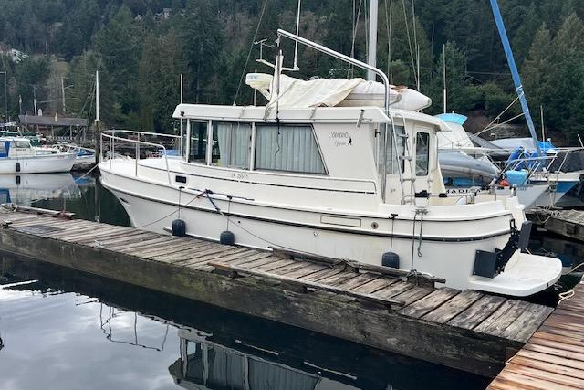

Camano 28/31 Gnome
1990–1995
The Camano 28/31 Gnome is the no-flybridge sistership to the Camano Troll, using the same Bob Warman Keelform hull, 28-foot hull length and roughly 31-foot overall envelope. Its lower profile removes the upper helm and associated ladder, windage and flybridge maintenance while retaining the single-diesel shaft drive, bright deckhouse and couple-oriented interior. The Gnome was discontinued early in the family’s production, making it substantially rarer than the Troll.

- Length
- 31 ft
- Beam
- 10.5 ft
- Draft
- 3.25 ft
- Hull behaviour
- Semi-Displacement
- Fuel
- Diesel
- Propulsion
- Shaft
- Engine configuration
- Single inboard diesel
- Boat family
- Trawler
- Construction
- Fiberglass composite; cored hull sides and cored deck reported, with model/year verification required
Best for
- Couples wanting the Camano hull without flybridge height or maintenance
- Great Loop, canal and protected coastal cruising
- Owners prioritizing lower-helm operation, efficiency and manageable dimensions
Trade-offs
- No elevated flybridge helm or upper outdoor seating
- Small cockpit and modest storage for extended liveaboard use
- Engine and tank access are compact compared with larger trawlers
- Published listings sometimes call the same design a 28 or 31, so identity requires year and configuration verification
Known concerns
- No model-specific concern has been promoted to B-Atlas’s evidence threshold. This does not mean the model has no age-, condition- or hull-specific risks.
Inspection focus
- Confirm hull number, marketed model designation and actual Troll/Gnome configuration
- Moisture-test windows, deck fittings, cabin-top and flybridge penetrations where applicable
- Inspect cored hull-side/deck areas around penetrations and previous repairs
- Inspect aluminum fuel tanks, plastic water tanks, fill/vent hoses and shutoff/return valves
- Inspect raw-water cooling, exhaust, shaft, cutlass bearing, rudder and hydraulic steering
- Check bonding, sacrificial anodes and shaft-zinc clearance near the keel exit
Continue researching
Related boat models
31 ft · Semi-Displacement
41 ft · Semi-Displacement
31 ft · Semi-Displacement
30.33 ft · Semi-Displacement
30.25 ft · Planing / Modified-V
31.92 ft · Semi-Displacement
About this record
B-Atlas preserves uncertainty: missing information remains unknown rather than being treated as a negative. Specifications and guidance describe the model record; individual boats can differ by year, equipment, refit and condition.